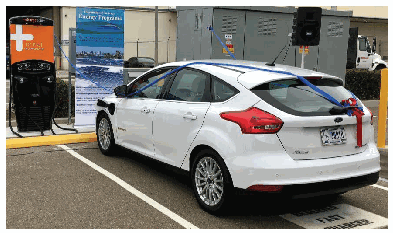
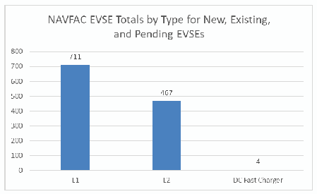

NIST IR 8294 日本語訳
英語タイトル : Symposium on Federally Funded Research on Cybersecurity of Electric Vehicle Supply Equipment (EVSE)日本語タイトル : 電気自動車用給電設備（EVSE）のサイバーセキュリティに関する連邦資金による研究のシンポジウム
公開日 : 2020-04-29
原文URL : https://csrc.nist.gov/pubs/ir/8294/final
翻訳編集 : 自動生成（有志による非公式の日本語訳）, 原文取得日 : 2026-10-31, 訳文 : 346 / 374 ブロック
[要約] NIST IR 8294 は、NIST の情報技術研究所（ITL）が開催した、電気自動車用給電設備（EVSE）のサイバーセキュリティに関する連邦資金による研究を紹介する 1 日間のシンポジウムの報告書です。EVSE の構造、サイバーセキュリティ上の懸念事項、この分野における連邦政府の研究を取り上げています。報告書は、EVSE が運輸とエネルギー（電力網）という二つの重要なセクターを結び付ける点を懸念事項として挙げています。全体的なポイントでは、参加者がサイバーセキュリティ上の懸念の存在や複数のセクターの結集の必要性に合意した一方、議論の場の有無については意見が一致しなかったと記しています。
NISTIR 8294
NISTIR 8294
Symposium on Federally Funded Research on Cybersecurity of Electric Vehicle Supply Equipment (EVSE)
電気自動車用給電設備（EVSE）のサイバーセキュリティに関する連邦資金による研究のシンポジウム
Suzanne Lightman Tanya Brewer
Suzanne Lightman Tanya Brewer
This publication is available free of charge from: https://doi.org/10.6028/NIST.IR.8294
本刊行物は https://doi.org/10.6028/NIST.IR.8294 から無料で入手できます。
NISTIR 8294
NISTIR 8294
Symposium on Federally Funded Research on Cybersecurity of Electric Vehicle Supply Equipment (EVSE)
電気自動車用給電設備（EVSE）のサイバーセキュリティに関する連邦資金による研究のシンポジウム
Suzanne Lightman Tanya Brewer Computer Security Division Information Technology Laboratory
Suzanne Lightman Tanya Brewer Computer Security Division Information Technology Laboratory
This publication is available free of charge from: https://doi.org/10.6028/NIST.IR.8294
本刊行物は https://doi.org/10.6028/NIST.IR.8294 から無料で入手できます。
April 2020
2020年4月
U.S. Department of Commerce Wilbur L. Ross, Jr., Secretary
米国商務省 Wilbur L. Ross, Jr. 長官
National Institute of Standards and Technology
米国国立標準技術研究所
Walter Copan, NIST Director and Under Secretary of Commerce for Standards and Technology
Walter Copan、NIST 所長兼商務次官（標準・技術担当）
National Institute of Standards and Technology Interagency or Internal Report 8294 82 pages (April 2020)
米国国立標準技術研究所 省庁間報告書または内部報告書 8294 82ページ（2020年4月）
This publication is available free of charge from: https://doi.org/10.6028/NIST.IR.8294
本刊行物は https://doi.org/10.6028/NIST.IR.8294 から無料で入手できます。
Certain commercial entities, equipment, or materials may be identified in this document in order to describe an experimental procedure or concept adequately. Such identification is not intended to imply recommendation or endorsement by NIST, nor is it intended to imply that the entities, materials, or equipment are necessarily the best available for the purpose.
本書では、実験的な手順や概念を適切に説明するために、特定の商業的主体、装置、または資材に言及する場合があります。こうした言及は、NIST による推奨や支持を意味するものではなく、それらの主体、資材、または装置がその目的に利用可能なもののうち必ずしも最良であることを意味するものでもありません。
There may be references in this publication to other publications currently under development by NIST in accordance with its assigned statutory responsibilities. The information in this publication, including concepts and methodologies, may be used by federal agencies even before the completion of such companion publications. Thus, until each publication is completed, current requirements, guidelines, and procedures, where they exist, remain operative. For planning and transition purposes, federal agencies may wish to closely follow the development of these new publications by NIST.
本刊行物では、NIST が法令上の責務に従って現在策定中のほかの刊行物に言及する場合があります。概念や方法論を含む本刊行物の情報は、そうした関連刊行物の完成前であっても、連邦機関が使用してもよいです。したがって、各刊行物が完成するまでは、現行の要件、ガイドライン、手順が存在する場合は、それらが引き続き有効です。計画および移行のため、連邦機関は、NIST によるこれらの新しい刊行物の策定状況を注意深く追うことを検討してもよいです。
Organizations are encouraged to review all draft publications during public comment periods and provide feedback to NIST. Many NIST cybersecurity publications, other than the ones noted above, are available at https://csrc.nist.gov/publications.
組織は、パブリックコメントの期間中にすべてのドラフト刊行物を確認し、NIST にフィードバックを提供することが推奨されます。上記以外にも、NIST の多くのサイバーセキュリティ刊行物が https://csrc.nist.gov/publications で入手できます。
Comments on this publication may be submitted to:
本刊行物へのコメントは次の宛先に提出できます。
National Institute of Standards and Technology Attn: Computer Security Division, Information Technology Laboratory 100 Bureau Drive (Mail Stop 8930) Gaithersburg, MD 20899-8930 Email: nistir8294-comments@nist.gov
National Institute of Standards and Technology Attn: Computer Security Division, Information Technology Laboratory 100 Bureau Drive (Mail Stop 8930) Gaithersburg, MD 20899-8930 Email: nistir8294-comments@nist.gov
All comments are subject to release under the Freedom of Information Act (FOIA).
すべてのコメントは、情報自由法（FOIA）に基づく公開の対象となります。
Reports on Computer Systems Technology
コンピュータシステム技術に関する報告書
The Information Technology Laboratory (ITL) at the National Institute of Standards and Technology (NIST) promotes the U.S. economy and public welfare by providing technical leadership for the Nation’s measurement and standards infrastructure. ITL develops tests, test methods, reference data, proof of concept implementations, and technical analyses to advance the development and productive use of information technology. ITL’s responsibilities include the development of management, administrative, technical, and physical standards and guidelines for the cost-effective security and privacy of other than national security-related information in federal information systems.
米国国立標準技術研究所（NIST）の情報技術研究所（ITL）は、国の計測・標準インフラストラクチャに対する技術的なリーダーシップを提供することで、米国経済と公共の福祉を促進しています。ITL は、情報技術の開発と生産的な利用を進めるため、テスト、テスト手法、参照データ、概念実証の実装、および技術分析を開発しています。ITL の責務には、連邦情報システムにおける国家安全保障関連以外の情報について、費用対効果の高いセキュリティとプライバシーを実現するための、管理面、運用面、技術面、物理面の標準およびガイドラインの策定が含まれます。
Abstract
要旨
Electric vehicles are becoming common on the Nation’s roads, and the electric vehicle supply equipment infrastructure (EVSE) is being created to support that growth. The NIST Information Technology Lab (ITL) hosted a one-day symposium to showcase federally funded research into the potential cybersecurity implications of EVSE.
電気自動車は国内の道路で一般的になりつつあり、その成長を支えるために、電気自動車用給電設備（EVSE）のインフラストラクチャが整備されています。NIST の情報技術研究所（ITL）は、EVSE の潜在的なサイバーセキュリティへの影響に関する、連邦資金による研究を紹介するために、1 日間のシンポジウムを開催しました。
Keywords
キーワード
Automotive cybersecurity; charging station cybersecurity; electric vehicles cybersecurity; electric vehicle infrastructure; electric vehicle supply equipment infrastructure (EVSE).
自動車のサイバーセキュリティ、充電ステーションのサイバーセキュリティ、電気自動車のサイバーセキュリティ、電気自動車のインフラストラクチャ、電気自動車用給電設備（EVSE）インフラストラクチャ。
Acknowledgments
謝辞
The NIST Information Technology Laboratory would like to acknowledge Lee Slezak of the Department of Energy, Christos Papadopoulos of the Department of Homeland Security, Kevin Harnett of the Department of Transportation, and James McCarthy of NIST for their contributions in putting together this symposium. NIST would also like to acknowledge the presenters for their participation. In addition, NIST would like to acknowledge Tim Weisenberger of SAE for chairing the discussion.
NIST の情報技術研究所は、このシンポジウムの開催に貢献した、エネルギー省の Lee Slezak、国土安全保障省の Christos Papadopoulos、運輸省の Kevin Harnett、NIST の James McCarthy に謝意を表します。NIST はまた、発表者の参加にも謝意を表します。さらに、議論の司会を務めた SAE の Tim Weisenberger にも謝意を表します。
Table of Contents
目次
List of Figures
図の一覧
1 Introduction
1 はじめに
Over the last decade, electric vehicles have evolved from concept cars to an accepted technology with almost every major automobile manufacturer offering at least one electric model. Sales of electric vehicles have risen significantly in Europe1 and 2 % of new vehicle sales in the U.S. were electric only.2 Major companies like GM and Volvo have announced their intentions to phase out gas-only vehicles within the next 20 years.3 There is also interest in the heavy trucking sector in electric trucks due, in part, to rising fuel costs and promised lower maintenance costs— so much so that cybersecurity guidelines for electric vehicle supply equipment infrastructure (EVSE) for heavy-duty trucks have been suggested.4
過去 10 年間で、電気自動車はコンセプトカーから広く受け入れられた技術へと進化し、主要な自動車メーカーのほぼすべてが、少なくとも 1 つの電気自動車モデルを提供しています。電気自動車の販売台数は欧州で大幅に増加しており1、米国の新車販売の 2 % が電気自動車のみでした。2 GM やボルボなどの大手企業は、今後 20 年以内にガソリン車のみを段階的に廃止する意向を発表しています。3 大型トラック分野でも、燃料費の上昇と維持費の低減が見込まれていることが一因となって、電気トラックへの関心が高まっており、大型トラック向けの電気自動車用給電設備インフラストラクチャ（EVSE）のサイバーセキュリティガイドラインが提案されるほどです。4
ELECTRIFY AMERICA’S IMPACT ON EVSE
ELECTRIFY AMERICA が EVSE に与える影響
As a result of the emissions scandal in 2016, Volkswagen funded Electrify America, which currently operates over 400 charging stations and is planning to invest another $2 billion in EVSE infrastructure.
2016 年の排ガス不正問題の結果として、Volkswagen は Electrify America に資金を提供しました。同社は現在 400 か所を超える充電ステーションを運営しており、EVSE インフラストラクチャにさらに 20 億ドルを投資する計画です。
https://www.electrifyamerica.com/our-plan
https://www.electrifyamerica.com/our-plan
EVSE is supported by electronics, both for charging the vehicle and facilitating communications, so EVSE is susceptible to cybersecurity vulnerabilities and attacks. EVSE also ties together two critical sectors— transportation and energy (specifically, the electric grid)—that have never been connected electronically before. This creates the potential for attacks that could have significant impacts in terms of money, business disruptions, and human safety.
EVSE は、車両の充電と通信の促進の両方のために電子機器によって支えられているため、サイバーセキュリティの脆弱性と攻撃の影響を受けやすいものです。また、EVSE は、これまで電子的に接続されたことがなかった 2 つの重要なセクター、すなわち運輸とエネルギー（具体的には電力網）を結び付けます。これにより、金銭、業務の中断、人間の安全の面で重大な影響を及ぼしうる攻撃の可能性が生まれます。
Because of this, there are multiple U.S. government agencies that are interested in this area, including:
このため、この分野に関心を持つ米国政府機関が複数あり、次のものが含まれます。
•Department of Energy
•エネルギー省
•Department of Homeland Security
•国土安全保障省
•Department of Transportation
•運輸省
•Department of Defense
•国防総省
•General Services Administration
•連邦調達庁
•NIST
•NIST
U.S. governmental concerns about cybersecurity of EVSE cover a range of issues. What impact would EVSE have on the stability of the electrical grid? Could EVSE serve as a vector for cybersecurity attacks impacting the Nation’s economy? In addition, the U.S. Government, as a potential user of electric vehicles and EVSE, is concerned about how cybersecurity threats to the charging infrastructure might affect government activities. These concerns, as well as policy interests in the adoption of electric vehicles, have led to research efforts sponsored by federal agencies to examine potential cybersecurity issues.
EVSE のサイバーセキュリティに関する米国政府の懸念は、さまざまな問題に及びます。EVSE は電力網の安定性にどのような影響を与えるのか。EVSE は、国の経済に影響を及ぼすサイバー攻撃の媒介となりうるのか。さらに、米国政府は、電気自動車と EVSE の潜在的な利用者として、充電インフラストラクチャに対するサイバーセキュリティ上の脅威が政府の活動にどう影響しうるかを懸念しています。これらの懸念と、電気自動車の普及に関する政策上の関心により、潜在的なサイバーセキュリティ上の問題を調べるための、連邦機関が支援する研究の取り組みが進められてきました。
Because of these concerns, the NIST Information Technology Lab (ITL) held a one-day meeting on September 12, 2019 as part of federal activities that are being undertaken to familiarize the Government and industry with the cybersecurity research done on EVSE infrastructure.
これらの懸念を受けて、NIST の情報技術研究所（ITL）は、政府と産業界に EVSE インフラストラクチャについて行われたサイバーセキュリティ研究を周知するために進められている連邦政府の活動の一環として、2019 年 9 月 12 日に 1 日間の会合を開催しました。
2 EVSE Structure
2 EVSE の構造
There are multiple components to the EVSE, and there are several possible architectures. For example, the EVSE may include the use of distributed energy resources (DERs), such as solar or wind, or it may use only conventional transmission. Some EVSEs may have energy storage systems (ESS), while others may not store power. There are EVSE architectures based on wireless power transfer (WPT) and others based on extreme fast charging stations (XFC).
EVSE には複数のコンポーネントがあり、可能なアーキテクチャも複数あります。たとえば、EVSE が太陽光や風力などの分散型エネルギー資源（DER）の利用を含む場合もあれば、従来の送電のみを利用する場合もあります。エネルギー貯蔵システム（ESS）を持つ EVSE もあれば、電力を貯蔵しない EVSE もあります。ワイヤレス電力伝送（WPT）に基づく EVSE のアーキテクチャもあれば、超急速充電ステーション（XFC）に基づくものもあります。
In addition, the EVSE architecture may include money exchange methods such as credit cards (equivalent to gas stations) and require the use of internet-enabled communications to make those transactions. EVSEs may be connected to building management systems when such systems are also responsible for heating or elevator operation.
さらに、EVSE のアーキテクチャには、クレジットカード（ガソリンスタンドと同等）などの金銭授受の方法が含まれ、それらの取引を行うためにインターネット対応の通信の利用が必要な場合があります。EVSE は、ビル管理システムが暖房やエレベーターの運転も担っている場合には、それらのシステムに接続されることがあります。
The EVSE has multiple participants who are dependent on the cybersecurity of the EVSE. These participants have different cybersecurity interests and risk levels which should be considered in the design, installation, and use of EVSEs.
EVSE には、EVSE のサイバーセキュリティに依存する複数の関係者がいます。これらの関係者は、サイバーセキュリティ上の関心とリスクレベルがそれぞれ異なり、EVSE の設計、設置、使用において考慮すべきです。
The parties involved may include:
関係する当事者には、次のものが含まれる場合があります。
•The vehicle owner/user who is recharging the vehicle
•車両を充電している車両の所有者／ユーザー
•The vehicle manufacturer
•車両の製造者
•The grid operator
•電力網の運用者
•The charging station manufacturer
•充電ステーションの製造者
•The charging station owner
•充電ステーションの所有者
•Credit card company if used for payment purposes
•支払い目的で使用される場合のクレジットカード会社
•Building management systems
•ビル管理システム
One EVSE architecture is illustrated in Figure 1 below. Other potential architectures are also illustrated in the attached presentations.
1 つの EVSE アーキテクチャを、下の図 1 に示します。そのほかの潜在的なアーキテクチャも、添付の発表資料に示されています。
![EVSE architecture diagram. At the top: "Electrical Grid Generation and Transmission" (power plant), "Electrical Grid Distribution" (transformer and transmission tower), and "EV Infrastructure Operations Management" (office building). Blue lines connect them to charging equipment below. A grey dashed box labeled "High power charge site w/DER" contains an "ESS" (energy storage cabinet) and "PV" (solar panel) feeding two "XFC" chargers. A third "XFC" charger sits outside the box at the left. Each XFC charger is linked to an electric car by a red dotted line. Two more cars at the right charge over "WPT" (wireless power transfer) pads. A large red dashed line encloses the operations management, the distribution equipment and the charging equipment.](assets/ir-8294/p0008-figure-01.png)
EVSE のアーキテクチャの図です。上部に「Electrical Grid Generation and Transmission」（発電所）、「Electrical Grid Distribution」（変圧器と送電鉄塔）、「EV Infrastructure Operations Management」（オフィスビル）があり、青い線で下の充電設備につながっています。灰色の破線の枠「High power charge site w/DER」の中に「ESS」（蓄電設備）と「PV」（太陽光パネル）があり、2 台の「XFC」充電器に給電しています。もう 1 台の「XFC」充電器は枠の外の左にあります。各 XFC 充電器は赤い点線で電気自動車につながっています。右の 2 台の車は「WPT」（ワイヤレス給電）のパッドで充電します。赤い太い破線が、運用管理、配電設備、充電設備を囲んでいます。
Figure 1: EVSE Architecture
図 1：EVSE のアーキテクチャ
Source: Rohde and Carlson, “Consequence-driven Cybersecurity for High-Power EV Charging Infrastructure.” (Appendix B)
出典：Rohde and Carlson, “Consequence-driven Cybersecurity for High-Power EV Charging Infrastructure.”（付録 B）
3 Concerns
3 懸念事項
At the workshop on September 12, 2019, the presenting researchers agreed that the EVSE infrastructure provides new targets for cybersecurity attacks. The implementation of EVSE creates connections between sectors (transportation and electrical grid) that are not common in the current gasoline-powered vehicle environment. The researchers also agreed that new targets for attackers and the potential for new vulnerabilities have been created. Among the possible consequences discussed were:
2019 年 9 月 12 日のワークショップで、発表した研究者らは、EVSE インフラストラクチャがサイバー攻撃の新たな標的をもたらすことで一致しました。EVSE の導入は、現在のガソリン車の環境では一般的でない、セクター間（運輸と電力網）の接続を生み出します。研究者らはまた、攻撃者にとっての新たな標的と新たな脆弱性の可能性が生まれたことでも一致しました。議論された起こりうる結果には、次のものがありました。
•Disruption of electrical grids
•電力網の混乱
•Safety-adverse effects on vehicles
•車両への安全性に関わる悪影響
•Credit card or banking fraud
•クレジットカードまたは銀行の詐欺
•Interference with building systems
•ビルシステムへの干渉
It was also pointed out by several researchers that the power and transportation sectors are under different regulatory schemes and have different cybersecurity concerns, and misalignment in cybersecurity approaches could cause unintentional exposures. Moreover, neither sector is developing or implementing EVSE in the majority of cases. Therefore, EVSE designs may not be addressing the cybersecurity risks of these sectors. To add to these concerns, there is currently no forum where these different industries can come together to discuss these issues.
複数の研究者からは、電力分野と運輸分野は異なる規制の枠組みの下にあり、サイバーセキュリティ上の懸念も異なること、およびサイバーセキュリティへのアプローチの不整合が意図しない露出を引き起こしうることも指摘されました。さらに、大半の場合、どちらのセクターも EVSE を開発も実装もしていません。したがって、EVSE の設計は、これらのセクターのサイバーセキュリティリスクに対処していない可能性があります。これらの懸念に加えて、現在、これらの異なる産業が一堂に会してこれらの問題を議論できる場がありません。
Another concern that was raised is the speed of rollout of EVSE infrastructure. Electrify America, for example, plans to invest over $230 million in EVSE infrastructure in the United States through 2021.5 Most of the researchers believe that there will be a significant jump in the adoption of electric vehicles in the coming years, especially once charging stations become widely available. The concern is that the speed of the rollout may result in an EVSE infrastructure that has not had cybersecurity “built in,” which will then need to be addressed later. Additionally, it was pointed out by several attendees that, although multiple federal agencies are interested in the issue, none of them have regulatory authority. Without a nationwide approach, EVSE could be implemented across the Nation with widely varying methods and levels of cybersecurity.
もう 1 つ提起された懸念は、EVSE インフラストラクチャの展開の速さです。たとえば Electrify America は、2021 年までに米国の EVSE インフラストラクチャに 2 億 3,000 万ドル以上を投資する計画です。5 大半の研究者は、特に充電ステーションが広く利用できるようになれば、今後数年間で電気自動車の普及が大幅に伸びると考えています。懸念されるのは、展開の速さによって、サイバーセキュリティが「組み込まれていない」EVSE インフラストラクチャができあがり、それに後から対処する必要が生じるおそれがあることです。さらに、複数の参加者から、複数の連邦機関がこの問題に関心を持っているものの、そのいずれも規制権限を持っていないことが指摘されました。全国的なアプローチがなければ、EVSE は、サイバーセキュリティの方法とレベルが大きく異なる形で全国に導入される可能性があります。
Because EVSE is a relatively new infrastructure, multiple researchers pointed out the lack of understanding of the risks and necessary controls. As a result, multiple researchers devoted significant attention to the development of threat models. Reliable threat models are needed to help determine what risks exist and what controls might mitigate such risks. Without threat models, it is difficult for manufacturers, users, and the Government to make risk-based decisions on the controls needed.
EVSE は比較的新しいインフラストラクチャであるため、複数の研究者が、リスクと必要な管理策についての理解が不足していることを指摘しました。その結果、複数の研究者が脅威モデルの開発に多くの注意を払っていました。どのようなリスクが存在し、どのような管理策がそのリスクを低減しうるかを判断するには、信頼できる脅威モデルが必要です。脅威モデルがなければ、製造者、ユーザー、政府が、必要な管理策についてリスクに基づく判断を下すことは困難です。
4 Federal Research in the Area
4 この分野における連邦政府の研究
Six projects, supported by federal dollars, presented their research:
連邦予算の支援を受けた 6 つのプロジェクトが、その研究を発表しました。
•Threat Model of Vehicle Charging Infrastructure (Sandia National Labs)
•車両充電インフラストラクチャの脅威モデル （Sandia National Labs）
•Enabling Secure and Resilient XFC: A Software/Hardware-Security Co-Design Approach (Virginia Tech)
•安全でレジリエントな XFC の実現：ソフトウェアとハードウェアのセキュリティの協調設計アプローチ（Virginia Tech）
•Consequence-Driven Cybersecurity for High-Power Charging Infrastructure (Idaho National Labs)
•大電力充電インフラストラクチャのための結果駆動型サイバーセキュリティ（Idaho National Labs）
•Cybersecurity for Grid Connected eXtreme Fast Charging (XFC) Station (CyberX) (ABB)
•電力網に接続された超急速充電（XFC）ステーションのサイバーセキュリティ（CyberX）（ABB）
•EVSE Cybersecurity Projects (National Motor Freight Traffic Association/DOT Volpe Center)
•EVSE サイバーセキュリティプロジェクト （National Motor Freight Traffic Association／DOT Volpe Center）
•Developing a Reference Architecture XFC-Integrated Charging Security Infrastructure Ecosystem (The Electric Power Research Institute EPRI)
•XFC 統合型充電セキュリティインフラストラクチャのエコシステムのリファレンスアーキテクチャの開発（The Electric Power Research Institute EPRI）
The full agenda is included in Appendix A, and presentation slides may be found in Appendix B.
全体のアジェンダは付録 A に、発表スライドは付録 B に収録しています。
5 Overall Points
5 全体的なポイント
There were multiple points that were agreed to both by the researchers and participants. All participants agreed that there are cybersecurity concerns, and it will require multiple sectors and organizations to come together to address these concerns. However, the participants could not agree on the existence of a forum in which all of the different interests could be discussed or a consensus reached on cybersecurity for EVSE.
研究者と参加者の両方が合意した点が複数ありました。すべての参加者が、サイバーセキュリティ上の懸念があること、およびこれらの懸念に対処するには複数のセクターと組織が結集する必要があることに合意しました。しかし、参加者は、さまざまな利害関係を議論したり、EVSE のサイバーセキュリティについて合意を形成したりできる場が存在するかどうかについては、意見が一致しませんでした。
The participants were also in agreement that international standards might be helpful if they were developed by a wide group that represented the disparate interests. There were concerns raised that, in the absence of industry-driven consensus standards, there may be conflicting regulatory requirements across the globe. This would increase costs for the EVSE industry.
参加者はまた、国際標準は、多様な利害を代表する幅広いグループによって策定されるのであれば、有用な場合があるという点でも一致しました。産業界主導のコンセンサス標準がない場合、世界各地で規制要件が競合する可能性があるという懸念が示されました。これは EVSE 産業のコストを増加させます。
There was discussion on the lack of coordination among the sectors involved (automotive, energy, and financial). Beyond not having a common forum, it was generally agreed by participants that there was a lack of familiarity between the electric and automotive sectors. As a result, the sectors had very little understanding of each other’s concerns and approaches to cybersecurity. This complicates the development of cybersecurity models for EVSE since it is difficult to establish a reasonable cybersecurity response or even agree upon forum of discussion to develop such a response without a common understanding of risks and concerns.
関係するセクター（自動車、エネルギー、金融）間の連携の欠如についても議論がありました。共通の場がないことに加えて、電力セクターと自動車セクターの間で互いへの理解が不足していたことが、参加者の間で概ね合意されました。その結果、各セクターは、サイバーセキュリティに関する互いの懸念やアプローチをほとんど理解していませんでした。リスクと懸念についての共通認識がなければ、合理的なサイバーセキュリティ対応を確立すること、あるいはそうした対応を策定するための議論の場に合意することさえ難しいため、これは EVSE のサイバーセキュリティモデルの開発を複雑にしています。
There is significant work being done on multiple threat models in the federally funded research projects, and all participants agreed that this work was valuable and a good use of federal funding. It was suggested that it would help to have some coordination among researchers to increase the usefulness of the threat models. Coordination would also allow industry to work across multiple models to build a comprehensive protection schema.
連邦資金による研究プロジェクトでは、複数の脅威モデルについて重要な取り組みが進められており、すべての参加者が、この取り組みには価値があり、連邦資金の有効な使い方であることに合意しました。脅威モデルの有用性を高めるために、研究者間で何らかの連携を図ると役立つだろうという提案がありました。連携によって、産業界が複数のモデルにまたがって取り組み、包括的な保護スキーマを構築することも可能になります。
A common concern for participants was that the two major industries that are involved in EVSE (i.e., automobile and electrical grid) are both heavily regulated. For automobiles, the regulations are in the areas of safety, anti-pollution, and energy consumption. For the electrical sector, the regulations oversee safety and reliability. Therefore, both industries work within a framework of requirements that was not developed with each other’s operations in mind. Participants were concerned that this could lead to confusion and conflict over cybersecurity as the industries are focused on different requirements and goals.
参加者に共通する懸念は、EVSE に関わる 2 つの主要な産業（すなわち自動車と電力網）がどちらも厳しく規制されていることでした。自動車については、安全、公害防止、エネルギー消費の分野に規制があります。電力セクターについては、安全と信頼性を規制が監督しています。したがって、両方の産業は、互いの運営を念頭に置いて策定されたわけではない要件の枠組みの中で活動しています。参加者は、各産業が異なる要件と目標に注力しているため、これがサイバーセキュリティをめぐる混乱と対立につながりうることを懸念しました。
An example of this conflict was the suggestion to develop a model of where to put EVSE and at what charging level. Transportation sector participants assumed that such a model would use the movement of vehicles to determine placement. However, the electric sector participants assumed that such a model would be based on power load. As a result, representatives from the energy sector objected to the development of such a model as it would contain extremely sensitive information that they would not be comfortable with providing to non-grid entities. However, there was general agreement that such a model was needed.
この対立の一例は、EVSE をどこに、どの充電レベルで設置するかのモデルを開発するという提案でした。運輸セクターの参加者は、そのようなモデルは車両の動きを使って設置場所を決めるものだと想定しました。しかし、電力セクターの参加者は、そのようなモデルは電力負荷に基づくものだと想定しました。その結果、エネルギーセクターの代表者は、そのようなモデルには、電力網の関係者以外に提供することに不安がある極めて機微な情報が含まれるとして、モデルの開発に異議を唱えました。ただし、そのようなモデルが必要であることについては、概ね合意がありました。
Repeatedly, the need for private sector leadership to oversee the effort was raised. The reasons for such a need included:
取り組みを監督するために、民間部門のリーダーシップが必要であるという指摘が繰り返されました。そうした必要性の理由には、次のものがありました。
•Multiple sectors with competing missions and concerns
•競合する任務と懸念を持つ複数のセクター
•Need for coordination to maximize scarce resources
•限られたリソースを最大限に活用するための連携の必要性
•No established fora for discussion
•議論のための確立された場がないこと
The current EVSE manufacturing industry has only two major players and multiple smaller companies. The industry has no trade association or accepted standards development organization. As a result, it is unclear, even to the companies concerned, who and where they could look to for leadership or even for participation in larger conversations.
現在の EVSE の製造産業には、大手が 2 社と、複数の小規模企業しかありません。この産業には、業界団体も、受け入れられた標準策定組織もありません。その結果、関係する企業自身にとってさえ、誰に、どこにリーダーシップを求めればよいのか、あるいはより大きな議論にどこで参加すればよいのかが不明確です。
There was a call for more federal leadership in this area by the major agencies represented: DoD, DoE, DoT, and DHS. However, there was a counter concern that regulation would not be helpful in this early stage. There were requests for assistance from NIST to aid in the development of standards. The discussion was chaired by SAE International, and there was some interest in using that organization as the standards development organization for EVSE.
代表を出していた主要機関である、国防総省（DoD）、エネルギー省（DoE）、運輸省（DoT）、国土安全保障省（DHS）に対し、この分野でのより強い連邦政府のリーダーシップを求める声がありました。しかし、この初期の段階では規制は役に立たないだろうという、反対の懸念もありました。標準の策定を支援するよう、NIST に対する要請もありました。議論は SAE International が司会を務め、EVSE の標準策定組織としてこの組織を利用することに一定の関心がありました。
Appendix A—Agenda
付録 A — アジェンダ
Federal Research in EVSE Cybersecurity
EVSE サイバーセキュリティに関する連邦政府の研究
September 12, 2019
2019年9月12日
National Center for Cybersecurity Excellence 9700 Great Seneca Hwy, Rockville, MD
National Center for Cybersecurity Excellence 9700 Great Seneca Hwy, Rockville, MD
AGENDA
アジェンダ
| 8:30 – 9:00 am | Registration |
| 9:00 – 9:30 am | Introductions and Opening Address |
| 9:30 – 10:00 am | Threat Model of Vehicle Charging Infrastructure Brian Wright, Sandia National Labs |
| 10:00 – 10:30 am | Enabling Secure and Resilient XFC: A Software/ Ryan Gerdes, Virginia Tech |
| 10:30 – 11:00 am | Break |
| 11:00 – 11:30 am | Consequence-Driven Cybersecurity for High-Power EV Charging Infrastructure Kenneth Rohde and Barney Carlson, Idaho National Laboratory |
| 11:30 – 12:00 am | Cybersecurity for Grid Connected eXtreme Fast Charging (XFC) Station (CyberX) David Coats, ABB |
| 12:00 – 1:00 pm | Lunch |
| 1:00 – 1:45 pm | National Motor Freight Traffic Association (NMFTA) Medium Duty and Heavy-Duty Electric Vehicle (MD/HDEV) Extreme Fast Charging (XFC) Cybersecurity Working Group Graham Watson, DOT-Volpe/KBRwyle |
| NAVFAC Electric Vehicle Supply Equipment (EVSE) Cybersecurity Best Practices and Procurement Language Report Gus Brown, DOT-Volpe/KBRwyle | |
| 1:45 – 2:15 pm | Reference Architecture for Securing XFC-Integrated Charging Infrastructure Tobias Whitney, EPRI |
| 2:15 – 2:45 pm | Break |
| 2:45 – 4:15 pm | Open discussion and next steps |
| 4:15 – 4:30 pm | Close |
| 8:30 – 9:00 am | 受付 |
| 9:00 – 9:30 am | 紹介および開会のあいさつ |
| 9:30 – 10:00 am | 車両充電インフラストラクチャの脅威モデル Brian Wright, Sandia National Labs |
| 10:00 – 10:30 am | 安全でレジリエントな XFC の実現：ソフトウェアとハードウェアのセキュリティの協調設計アプローチ Ryan Gerdes, Virginia Tech |
| 10:30 – 11:00 am | 休憩 |
| 11:00 – 11:30 am | 大電力 EV 充電インフラストラクチャのための結果駆動型サイバーセキュリティ Kenneth Rohde and Barney Carlson, Idaho National Laboratory |
| 11:30 – 12:00 am | 電力網に接続された超急速充電（XFC）ステーションのサイバーセキュリティ（CyberX） David Coats, ABB |
| 12:00 – 1:00 pm | 昼食 |
| 1:00 – 1:45 pm | National Motor Freight Traffic Association（NMFTA）の中型・大型電気自動車（MD/ Graham Watson, DOT-Volpe/KBRwyle |
| NAVFAC の電気自動車用給電設備（EVSE）サイバーセキュリティのベストプラクティスおよび調達文言に関する報告書 Gus Brown, DOT-Volpe/KBRwyle | |
| 1:45 – 2:15 pm | XFC 統合型充電インフラストラクチャを保護するためのリファレンスアーキテクチャ Tobias Whitney, EPRI |
| 2:15 – 2:45 pm | 休憩 |
| 2:45 – 4:15 pm | 自由討議および今後のステップ |
| 4:15 – 4:30 pm | 閉会 |
Appendix B—Presentations
付録 B — 発表資料
This appendix contains the slides submitted by each presenter at the symposium and follow the order in the agenda in Appendix A.
この付録は、シンポジウムで各発表者が提出したスライドを収録しており、付録 A のアジェンダの順に並んでいます。
Threat Model of Vehicle Charging Infrastructure
車両充電インフラストラクチャの脅威モデル
[Excerpt from Threat Model of Vehicle Charging Infrastructure, © Sandia National Laboratories — not reproduced on this unofficial site]
［Threat Model of Vehicle Charging Infrastructure からの引用。第三者（Sandia National Laboratories）の著作物のため、この非公式サイトには掲載していません。原本 PDF を参照してください。］
Federal Research in EVSE Cybersecurity: Enabling Secure and Resilient XFC: A Software/Hardware-Security Co-Design Approach
EVSE サイバーセキュリティに関する連邦政府の研究：安全でレジリエントな XFC の実現：ソフトウェアとハードウェアのセキュリティの協調設計アプローチ
[Excerpt from Federal Research in EVSE Cybersecurity: Enabling Secure and Resilient XFC: A Software/Hardware-Security Co-Design Approach, © Virginia Tech — not reproduced on this unofficial site]
［Federal Research in EVSE Cybersecurity: Enabling Secure and Resilient XFC: A Software/Hardware-Security Co-Design Approach からの引用。第三者（Virginia Tech）の著作物のため、この非公式サイトには掲載していません。原本 PDF を参照してください。］
Consequence-driven Cybersecurity for High Power EV Charging Infrastructure
大電力 EV 充電インフラストラクチャのための結果駆動型サイバーセキュリティ
[Excerpt from Consequence-driven Cybersecurity for High Power EV Charging Infrastructure, © Idaho National Laboratory — not reproduced on this unofficial site]
［Consequence-driven Cybersecurity for High Power EV Charging Infrastructure からの引用。第三者（Idaho National Laboratory）の著作物のため、この非公式サイトには掲載していません。原本 PDF を参照してください。］
Cybersecurity for Grid Connected eXtreme Fast Charging (XFC) Station (CyberX)
電力網に接続された超急速充電（XFC）ステーションのサイバーセキュリティ（CyberX）
[Excerpt from Cybersecurity for Grid Connected eXtreme Fast Charging (XFC) Station (CyberX), © ABB Inc. — not reproduced on this unofficial site]
［Cybersecurity for Grid Connected eXtreme Fast Charging (XFC) Station (CyberX) からの引用。第三者（ABB Inc.）の著作物のため、この非公式サイトには掲載していません。原本 PDF を参照してください。］
NMFTA Medium Duty and Heavy Duty Electric Vehicle (MD/HDEV) Extreme Fast Charging (XFC) Cybersecurity Working Group
NMFTA 中型・大型電気自動車（MD/HDEV）超急速充電（XFC）サイバーセキュリティワーキンググループ
Advanced Vehicle Technology Division
Advanced Vehicle Technology Division
September 12, 2019
2019年9月12日
［組織・プログラムのロゴ。ロゴのため、この非公式サイトには掲載していません。原本 PDF を参照してください。］
［組織・プログラムのロゴ。ロゴのため、この非公式サイトには掲載していません。原本 PDF を参照してください。］
Agenda
アジェンダ
•DOT/Volpe Center Overview
•DOT/Volpe Center の概要
•NMFTA Extreme Fast Charging Cybersecurity Project
•NMFTA 超急速充電サイバーセキュリティプロジェクト
•Background
•背景
•Cybersecurity Concerns
•サイバーセキュリティ上の懸念
•XFC Cybersecurity Working Group
•XFC サイバーセキュリティワーキンググループ
•XFC Cybersecurity Requirements and Procurement Language Report
•XFC のサイバーセキュリティ要件および調達文言に関する報告書
DOT/Volpe Center Overview
DOT/Volpe Center の概要
History in Brief
沿革の概要
•The Transportation Systems Center was created in 1970, drawing on the legacy of the former NASA Electronics Research Center.
•Transportation Systems Center は 1970 年に、前身である NASA Electronics Research Center の流れを引き継いで創設されました。
•In 1990, the Center was renamed in honor of the second Secretary of Transportation and former Governor of Massachusetts, John A. Volpe.
•1990 年に、第 2 代運輸長官でありマサチューセッツ州の元知事である John A. Volpe にちなんで、センターの名称が改められました。
•The Volpe Center has proudly and professionally served 17 Secretaries of Transportation, their deputies and assistant secretaries, and over 300 modal administrators.
•Volpe Center は、17 人の運輸長官、その副長官および次官補、ならびに 300 人を超える各輸送モードの管理者に対し、誇りを持って専門的なサービスを提供してきました。
［人物の写真。人物が写っているため、この非公式サイトには掲載していません。原本 PDF を参照してください。］
［人物の写真。人物が写っているため、この非公式サイトには掲載していません。原本 PDF を参照してください。］
Key Features of the U.S. DOT Volpe Center
米国 DOT Volpe Center の主な特長
•Federal partner
•連邦のパートナー
•Track record of exceptional products and impact
•優れた成果と影響の実績
•World-class talent and resources
•世界水準の人材とリソース
•Multimodal and cross-disciplinary expertise
•マルチモーダルかつ分野横断的な専門知識
•Flexible, adaptable, and responsive to sponsors
•スポンサーに対して柔軟で、適応性があり、迅速に対応
•Historical perspective, institutional memory
•歴史的な視点と組織の記憶
•Entrepreneurial and efficient
•起業家精神があり効率的
•Strong, collaborative working relationships across U.S. DOT, other Federal agencies, and the broader transportation community
•米国 DOT、その他の連邦機関、および広範な運輸コミュニティにわたる、強固で協力的な関係
•Values-driven honest broker
•価値観に基づく誠実な仲介者
•Cost reimbursable
•費用の実費弁済
［装飾の画像。本文を読むのに必要のない装飾のため、この非公式サイトには掲載していません。原本 PDF を参照してください。］
［装飾の画像。本文を読むのに必要のない装飾のため、この非公式サイトには掲載していません。原本 PDF を参照してください。］
Infrastructure Systems and Technology
インフラストラクチャシステムと技術
Focus
重点分野
•Transportation infrastructure evaluation and engineering
•運輸インフラストラクチャの評価とエンジニアリング
•Crash avoidance and electronic systems safety and resilience
•衝突回避と電子システムの安全性およびレジリエンス
•Cybersecurity of the transportation enterprise
•運輸エンタープライズのサイバーセキュリティ
•Logistics and supply chain analysis
•ロジスティクスとサプライチェーンの分析
Example projects
プロジェクトの例
•Cybersecurity for government vehicles (DHS)
•政府車両のサイバーセキュリティ（DHS）
•Heavy vehicle cybersecurity (NMFTA, Inc.)
•大型車両のサイバーセキュリティ（NMFTA, Inc.）
•Analysis of automotive cybersecurity incidents and response (NHTSA)
•自動車のサイバーセキュリティインシデントと対応の分析（NHTSA）
•Connected vehicles evaluation and safety assessment (FHWA)
•コネクテッドビークルの評価と安全性アセスメント（FHWA）
•Improving grade crossing safety (FRA)
•踏切の安全性の向上（FRA）
•Intelligent transportation systems policy and planning (ITS JPO)
•高度道路交通システムの政策と計画（ITS JPO）
［装飾の画像。本文を読むのに必要のない装飾のため、この非公式サイトには掲載していません。原本 PDF を参照してください。］
Extreme Fast Charging (XFC) Cybersecurity Requirements Report
超急速充電（XFC）サイバーセキュリティ要件報告書
Extreme Fast Charging
超急速充電
•What can you power with 1 Megawatt?
•1 メガワットで何を動かせるか
•Run a refrigerator for 3 months
•冷蔵庫を 3 か月間動かす
•Download 133,320 songs
•133,320 曲をダウンロードする
•Brew 2,400 pots of coffee
•コーヒーを 2,400 杯淹れる
•Charge 5,556 iPhones
•iPhone 5,556 台を充電する
•Power a Traffic Signal for three months
•信号機を 3 か月間動かす
•Host 600 World Series final game parties
•ワールドシリーズの最終戦のパーティーを 600 回開催する
［組織・プログラムのロゴ。ロゴのため、この非公式サイトには掲載していません。原本 PDF を参照してください。］
Volpe’s Role in the development of the NMFTA XFC Cybersecurity Requirements Report
NMFTA XFC サイバーセキュリティ要件報告書の作成における Volpe の役割
•Volpe was responsible for creating and hosting the NMFTA XFC cybersecurity working group and collecting the requirements derived from the working group but not writing the requirements themselves
•Volpe は、NMFTA XFC サイバーセキュリティワーキンググループの設立と運営、およびワーキンググループから導かれた要件の収集を担当しましたが、要件そのものは執筆していません
Extreme Fast Charging Cybersecurity Concerns
超急速充電のサイバーセキュリティ上の懸念
•Cybersecurity Concerns for Extreme Fast Charging
•超急速充電のサイバーセキュリティ上の懸念
•Damage to chargers/vehicles through cyber attacks
•サイバー攻撃による充電器や車両の損傷
•Disruption to electrical grid via “whipsaw” cyber attacks on networked extreme fast chargers
•ネットワーク接続された超急速充電器に対する「ホイップソー」型のサイバー攻撃による電力網の混乱
•Networking of multiple chargers increases cybersecurity risk and potential damage
•複数の充電器をネットワーク接続すると、サイバーセキュリティリスクと潜在的な被害が増大する
•Business and commerce disruptions due to Medium and Heavy Duty Electric Vehicles (MD/HDEV) becoming non-operational
•中型・大型電気自動車（MD/HDEV）が稼働不能になることによる、事業と商取引の混乱
•Currently there are No world-wide cybersecurity standards for charging units
•現在、充電ユニットに関する世界共通のサイバーセキュリティ標準はない
NMFTA MD/HDEV XFC Cybersecurity Working Group - Background
NMFTA MD/HDEV XFC サイバーセキュリティワーキンググループ - 背景
Background
背景
•Department of Energy/DOT-Volpe Center
•エネルギー省／DOT-Volpe Center
•November 29-30, 2017 DOE held the first ever EV/EVSE cybersecurity workshop with many stakeholders in the Electric Vehicle environment
•2017 年 11 月 29 日から 30 日にかけて、DOE は、電気自動車の環境における多数の関係者を集めた、初の EV／EVSE サイバーセキュリティワークショップを開催した
•At the end of the workshop, it became clear that EVSEs have critical and major vulnerabilities
•ワークショップの終わりには、EVSE に重大かつ深刻な脆弱性があることが明らかになりました。
•DOE/DHS/DOT Volpe Technical Meeting on Electric Vehicle and Charging Station Cybersecurity Report* was produced detailing the findings of the workshop
•ワークショップの調査結果を詳述した DOE/DHS/DOT Volpe Technical Meeting on Electric Vehicle and Charging Station Cybersecurity Report* が作成された
*https://rosap.ntl.bts.gov/view/dot/34991/dot_34991_DS1.pdf?download-document-submit=Download
*https://rosap.ntl.bts.gov/view/dot/34991/dot_34991_DS1.pdf?download-document-submit=Download
XFC Cybersecurity Project Objectives
XFC サイバーセキュリティプロジェクトの目標
NMFTA MD/HDEVXFC Cybersecurity Working Group - Objectives
NMFTA MD/HDEVXFC サイバーセキュリティワーキンググループ - 目標
•NMFTA/Volpe MD/HDEV and Charging Infrastructure Cyber Security Baseline Reference Document
•NMFTA/Volpe MD/HDEV and Charging Infrastructure Cyber Security Baseline Reference Document
•Provided a baseline reference document for understanding the issues surrounding MD/HDEV cybersecurity
•MD/HDEV のサイバーセキュリティをめぐる問題を理解するための、ベースライン参照文書を提供した
•XFC Cybersecurity Working Group
•XFC サイバーセキュリティワーキンググループ
•Coordination and harmonization among stakeholders is essential
•関係者間の調整と調和が不可欠である
•Reduces parallel research efforts
•並行する研究の取り組みを減らす
•Defines clear roles and responsibilities
•明確な役割と責任を定義する
•Maximizes return on investment for the greater research community
•より広い研究コミュニティにとっての投資対効果を最大化する
•Bridges two critical infrastructure groups: energy and transportation
•2 つの重要インフラストラクチャグループ、すなわちエネルギーと運輸の橋渡しをする
NMFTA MD/HDEVXFC Cybersecurity Working Group – Objectives (Cont’d)
NMFTA MD/HDEVXFC サイバーセキュリティワーキンググループ – 目標（続き）
Volpe’s role in the Working Group:
ワーキンググループにおける Volpe の役割：
Volpe conducted the working group meetings, collected requirements derived from the meetings and produced the output of the group in a report format
Volpe は、ワーキンググループの会合を運営し、会合から導かれた要件を収集して、グループの成果を報告書の形にまとめた
Objectives
目標
•Cybersecurity best practices and requirements for a MD/HDEV XFC document
•MD/HDEV XFC のためのサイバーセキュリティのベストプラクティスと要件の文書
•Procurement language and technical cybersecurity requirements for carriers and OEMs
•運送事業者と OEM 向けの調達文言と技術的なサイバーセキュリティ要件
•Assurance language for cybersecurity requirements
•サイバーセキュリティ要件に対する保証の文言
•Cybersecurity requirements that are commercially feasible
•商業的に実現可能なサイバーセキュリティ要件
NMFTA MD/HDEVXFC Cybersecurity Working Group – Objectives (Cont’d)
NMFTA MD/HDEVXFC サイバーセキュリティワーキンググループ – 目標（続き）
Objectives
目標
•Provide the XFC Cybersecurity Best Practices and Requirements for MD/HDEV document to various standards organizations such as:
•XFC Cybersecurity Best Practices and Requirements for MD/HDEV 文書を、次のようなさまざまな標準化団体に提供します。
•National Institute of Standards and Technology (NIST)
•National Institute of Standards and Technology（NIST）
•Charging Interface Initiative (CHarIN e.v.)
•Charging Interface Initiative（CHarIN e.v.）
•International Electrotechnical Commission Technical Committee 69-Electric Road Vehicles and Electric Industrial Trucks (Contact: Craig Rodine, ChargePoint)
•International Electrotechnical Commission Technical Committee 69-Electric Road Vehicles and Electric Industrial Trucks（連絡先：Craig Rodine, ChargePoint）
•And others for adoption by the MD/HDEV sector and NMFTA stakeholders/members
•そのほか、MD/HDEV セクターと NMFTA の関係者／会員による採用のために、ほかの団体にも提供する
NMFTA MD/HDEV XFC Cybersecurity Working Group - Members
NMFTA MD/HDEV XFC サイバーセキュリティワーキンググループ - メンバー
•XFC Cybersecurity Working Group Members
•XFC サイバーセキュリティワーキンググループのメンバー
•Federal Agencies - DOE, National Institute of Standards and Technology, DOT (i.e., the Volpe Center, FMCSA, Federal Transit Administration, and the DOE National Laboratories
•連邦機関 - DOE、National Institute of Standards and Technology、DOT（すなわち Volpe Center、FMCSA、Federal Transit Administration、および DOE National Laboratories）
•Electric Trucking Industry Stakeholders - Electric truck OEM/suppliers, electric truck charging vendors, utilities, network aggregators, trade associations, standards bodies and others
•電動トラック産業の関係者 - 電動トラックの OEM／サプライヤー、電動トラックの充電ベンダー、電力会社、ネットワークアグリゲーター、業界団体、標準化団体、その他
•International Govt. Agencies - National Research Council-Canada, Office for Low Emission Vehicles-UK
•国際政府機関 - National Research Council-Canada、Office for Low Emission Vehicles-UK
•ISACs: Automotive Information Sharing and Analysis Center (Auto-ISAC) and Electricity Information Sharing and Analysis Center (E-ISAC)
•ISACs：Automotive Information Sharing and Analysis Center（Auto-ISAC）および Electricity Information Sharing and Analysis Center（E-ISAC）
NMFTA MD/HDEV XFC Cybersecurity Working Group – Progress to Date
NMFTA MD/HDEV XFC サイバーセキュリティワーキンググループ – これまでの進捗
•Cyber Security Sub-Working Groups
•サイバーセキュリティのサブワーキンググループ
•Sub-Working Group A – Technical
•サブワーキンググループ A – 技術
•Currently meeting on a bi-weekly basis
•現在、隔週で会合している
•Contributes to identifying and defining MD/HDEV XFC cyber security requirements
•MD/HDEV XFC のサイバーセキュリティ要件の特定と定義に貢献する
•Does the writing and drafting of the requirements to ensure that the proper language is used with regard to applicable industry, procurement and guidance standards
•該当する業界標準、調達標準、ガイダンス標準に関して適切な文言が使われるよう、要件の執筆と起草を行う
•Sub-Working Group B – Review
•サブワーキンググループ B – レビュー
•Reviews, comments, and gathers consensus among working group members on Sub-Working Group A’s Documents
•サブワーキンググループ A の文書についてレビューとコメントを行い、ワーキンググループメンバー間の合意を取りまとめる
XFC Cybersecurity WG Example Products
XFC サイバーセキュリティ WG の成果物の例
NMFTA MD/HDEV XFC Cybersecurity Working Group Report – Functions/Security Controls
NMFTA MD/HDEV XFC サイバーセキュリティワーキンググループ報告書 – 機能／セキュリティ管理策
•Design
•設計
•Defines future-proofing, secure remote updates, secure versioning, etc.
•将来への対応、安全なリモート更新、安全なバージョン管理などを定義する
•Cryptography
•暗号
•Defines crypto algorithms, key lengths, key management, crypto versioning
•暗号アルゴリズム、鍵長、鍵管理、暗号のバージョン管理を定義する
•Communications
•通信
•Defines message/firmware confidentiality, integrity, authenticity, replay detection, etc.
•メッセージやファームウェアの機密性、完全性、真正性、リプレイ検知などを定義する
•Hardening
•堅牢化
•Defines least functionality, device hardening, interface minimization, physical manipulation protections, etc.
•最小機能、デバイスの堅牢化、インターフェースの最小化、物理的な操作に対する保護などを定義する
•Resiliency
•レジリエンス
•Defines message integrity verification, fail-secure operation
•メッセージの完全性の検証、フェイルセキュアな動作を定義する
NMFTA MD/HDEV XFC Cybersecurity Working Group Report – Functions/Security Controls
NMFTA MD/HDEV XFC サイバーセキュリティワーキンググループ報告書 – 機能／セキュリティ管理策
•Secure Operation
•安全な運用
•Defines access controls, key management, secure data storage, pen testing, etc.
•アクセス制御、鍵管理、安全なデータ保存、ペネトレーションテストなどを定義する
•Logging
•ログ記録
•Defines aspects of IDS/IPS, and the logging of cybersecurity events that occur
•IDS／IPS の側面と、発生するサイバーセキュリティイベントのログ記録を定義する
•Lifecycle and Governance
•ライフサイクルとガバナンス
•Defines vulnerability disclosure program, configuration management, security awareness, incident response plan, etc.
•脆弱性開示プログラム、構成管理、セキュリティ意識向上、インシデント対応計画などを定義する
•Assurance
•保証
•Defines design evidence, security testing, secure coding practices, etc.
•設計の証拠、セキュリティテスト、セキュアコーディングのプラクティスなどを定義する
•EVSE Operator/Utility Communications
•EVSE 運用者／電力会社の通信
•Defines aspects of EVSE Operator and Utility communications authentication and integrity
•EVSE 運用者と電力会社の通信の認証と完全性の側面を定義する
NMFTA MD/HDEV XFC Cybersecurity Working Group Report – Section 3 Example
NMFTA MD/HDEV XFC サイバーセキュリティワーキンググループ報告書 – 第 3 節の例
| EVSE System Specification Section: Cryptography | |||
|---|---|---|---|
| Source: ElaadNL-Chapter 2 Section 2.2 Cryptographic Algorithms and Protocols | |||
| Ref # | Requirement Type | Devices | Requirements |
| SSCR-02 | Cryptographic Random Number Generation | Local Controllers, Authentication Terminals | The Device SHALL use a dedicated cryptographic pseudo- random number generator, as defined in FIPS 186-4 [9], FIPS 140-2 (Annex C)[10] to generate random numbers used for security functions such as secret key generation and generation of nonces. The Device SHALL use the algorithms implemented exactly as they are described in reviewed literature without any modifications. |
| Assurances | |||
| |||
| System Threat Reference | |||
| |||
| EVSE システム仕様の節：暗号 | |||
|---|---|---|---|
| 出典：ElaadNL-Chapter 2 Section 2.2 Cryptographic Algorithms and Protocols | |||
| 参照番号 | 要件の種類 | デバイス | 要件 |
| SSCR-02 | 暗号論的乱数生成 | ローカルコントローラー、認証端末 | デバイスは、共通鍵の生成やナンスの生成などのセキュリティ機能に使用する乱数を生成するために、FIPS 186-4 [9]、FIPS 140-2（Annex C）[10] に定義された、専用の暗号論的疑似乱数生成器を使用しなければなりません（SHALL）。デバイスは、査読された文献に記述されているとおりのアルゴリズムを、変更を加えずにそのまま実装して使用しなければなりません（SHALL）。 |
| 保証 | |||
| |||
| システムの脅威への参照 | |||
| |||
NMFTA MD/HDEV XFC Cybersecurity Working Group – Final Report
NMFTA MD/HDEV XFC サイバーセキュリティワーキンググループ – 最終報告書
•Purpose of Final Report
•最終報告書の目的
•Provide an industry overview of MD/HDEV XFC systems
•MD/HDEV XFC システムの業界概観を提供する
•Define Cyber Security best practices and requirements for a MD/HDEV XFC based on feedback and concurrence from working group efforts
•ワーキンググループの取り組みからのフィードバックと同意に基づいて、MD/HDEV XFC のためのサイバーセキュリティのベストプラクティスと要件を定義する
•Provide procurement language and technical requirements for Carriers and Electric Truck OEMs
•運送事業者と電動トラックの OEM 向けに、調達文言と技術要件を提供する
•The report was delivered to the NMFTA and is posted on the NMFTA’S GitHub site: https://github.com/nmfta-repo/nmfta-hvcs-xfc, where it can be downloaded and commented on. (If appropriate, the NMFTA will coordinate future revision efforts)
•報告書は NMFTA に提出され、NMFTA の GitHub サイト https://github.com/nmfta-repo/nmfta-hvcs-xfc に掲載されており、そこからダウンロードしたりコメントしたりできます。（適切な場合、NMFTA が今後の改訂の取り組みを調整します）
•The NMFTA-DOT/Volpe technical support contract ended on July 1, 2019
•NMFTA-DOT/Volpe の技術支援契約は 2019 年 7 月 1 日に終了した
Questions
質問
［装飾の画像。本文を読むのに必要のない装飾のため、この非公式サイトには掲載していません。原本 PDF を参照してください。］
Contact Information
連絡先情報
Kevin Harnett
IT Specialist (Information Systems Security) & Program Manager
DOT, OST-R, Volpe Center
Advanced Vehicle Technology Division
kevin.harnett@dot.gov
617-699-7086
Kevin Harnett
IT スペシャリスト（情報システムセキュリティ）兼プログラムマネージャー
DOT, OST-R, Volpe Center
Advanced Vehicle Technology Division
kevin.harnett@dot.gov
617-699-7086
Urban Jonson
Chief Technology Officer
NMFTA, Inc.
urban.Jonson@nmfta.org
(703) 838-1828
Urban Jonson
最高技術責任者
NMFTA, Inc.
urban.Jonson@nmfta.org
(703) 838-1828
Graham Watson
Sr. Engineer
KBRwyle/Stinger Ghaffarian Technologies
assigned to: DOT/Volpe Center
graham.watson.ctr@dot.gov
508-378-7167
Graham Watson
シニアエンジニア
KBRwyle/Stinger Ghaffarian Technologies
配属先：DOT/Volpe Center
graham.watson.ctr@dot.gov
508-378-7167
Brendan Harris
IT Specialist (Information Systems Security) & Program Manager
DOT, OST-R, Volpe Center
Advanced Vehicle Technology Division
brendan.harris@dot.gov
617-494-2833
Brendan Harris
IT スペシャリスト（情報システムセキュリティ）兼プログラムマネージャー
DOT, OST-R, Volpe Center
Advanced Vehicle Technology Division
brendan.harris@dot.gov
617-494-2833
［人物の写真。人物が写っているため、この非公式サイトには掲載していません。原本 PDF を参照してください。］
［人物の写真。人物が写っているため、この非公式サイトには掲載していません。原本 PDF を参照してください。］
［人物の写真。人物が写っているため、この非公式サイトには掲載していません。原本 PDF を参照してください。］
［人物の写真。人物が写っているため、この非公式サイトには掲載していません。原本 PDF を参照してください。］
NAVFAC Electric Vehicle Supply Equipment (EVSE) Cybersecurity Best Practices and Procurement Language Report
NAVFAC の電気自動車用給電設備（EVSE）サイバーセキュリティのベストプラクティスおよび調達文言に関する報告書
Advanced Vehicle Technology Division
Advanced Vehicle Technology Division
Sept 12, 2019
2019年9月12日
［組織・プログラムのロゴ。ロゴのため、この非公式サイトには掲載していません。原本 PDF を参照してください。］
［組織・プログラムのロゴ。ロゴのため、この非公式サイトには掲載していません。原本 PDF を参照してください。］
Agenda
アジェンダ
•NAVFAC Transportation Alt Fuel Vehicle Initiative Overview
•NAVFAC の運輸分野における代替燃料車イニシアチブの概要
•NAVFAC EVSE Cybersecurity Best Practices and Procurement Language Report
•NAVFAC の EVSE サイバーセキュリティのベストプラクティスおよび調達文言に関する報告書
•Background & Objective
•背景と目標
•Navy & U.S. Government EVSE Overview
•海軍と米国政府の EVSE の概要
•Cybersecurity Concerns
•サイバーセキュリティ上の懸念
•EVSE Cybersecurity Requirements and Procurement Language Report
•EVSE のサイバーセキュリティ要件および調達文言に関する報告書
NAVFAC Transportation Alt Fuel Vehicle Initiative
NAVFAC の運輸分野における代替燃料車イニシアチブ
•Integrates alternative fuel vehicles across the Navy non-tactical vehicle (NTV) fleet to meet federal fleet requirements:
•連邦車両に関する要件を満たすため、海軍の非戦術車両（NTV）の車両群全体に代替燃料車を導入します。
•Energy Independence and Security Act (EISA)
•Energy Independence and Security Act（EISA）

青いリボンを掛けた白い電気自動車が電気自動車の充電ステーションに駐車している写真です。背景に横断幕と設備があります。
•Energy Policy Act (EPAct)
•Energy Policy Act（EPAct）
•Executive Order 13834
•大統領令 13834
•Mission impact of increased AFV utilization are:
•AFV の利用拡大が任務に与える影響は次のとおり。
•Decreased reliance on petroleum
•石油への依存の低減
•Increased base resiliency
•基地のレジリエンスの向上
•Increased energy security
•エネルギー安全保障の向上
Focused on increasing availability of Electric Vehicle Supply Equipment (EVSE) to support further NTV fleet electrification
NTV の車両群のさらなる電動化を支えるため、電気自動車用給電設備（EVSE）の利用可能性の拡大に重点を置く
NAVFAC EVSE Cybersecurity Best Practices and Procurement Language Report
NAVFAC の EVSE サイバーセキュリティのベストプラクティスおよび調達文言に関する報告書
Background
背景
•November 2017 - DOE/DHS/DOT Volpe Technical Meeting on Electric Vehicle and Charging Station Cybersecurity Report
•2017 年 11 月 - DOE/DHS/DOT Volpe Technical Meeting on Electric Vehicle and Charging Station Cybersecurity Report
•Identified EVSE as a major vulnerability point in the electric vehicle environment.
•EVSE を、電気自動車の環境における主要な脆弱性の拠点として特定しました。
•Follow on studies by various entities such as the Volpe Center, National Motor Freight Transportation Administration (NMFTA), Idaho and Sandia National Labs, to name a few, have identified and documented specific vulnerabilities as well as cybersecurity recommendations.
•Volpe Center、National Motor Freight Transportation Administration（NMFTA）、Idaho および Sandia の National Labs など、さまざまな主体によるその後の研究が、具体的な脆弱性を特定して文書化し、サイバーセキュリティに関する推奨事項も示しました。
•Executive Order (EO) 13834, Efficient Federal Operations, Section 1 instructs agencies to meet statutory requirements related to energy and environmental performance of vehicles in a manner that increases efficiency, optimizes performance, and reduces waste and costs
•大統領令（EO）13834「Efficient Federal Operations」の第 1 節は、各機関に対し、車両のエネルギー性能および環境性能に関する法定要件を、効率を高め、性能を最適化し、無駄とコストを削減する方法で満たすよう指示しています。
•Other Guidance:
•その他のガイダンス：
•Energy Independence and Security Act (EISA)
•Energy Independence and Security Act（EISA）
•Energy Policy Act (EPAct)
•Energy Policy Act（EPAct）
Objectives
目標
•TASK
•タスク
•Conduct interviews with SMEs in Navy EV and EVSE purchasing, deployment, maintenance and operations
•海軍の EV と EVSE の購入、配備、保守、運用に携わる SME にインタビューを実施する
•Identify threats and vulnerabilities to Navy EVSE and create a threat model
•海軍の EVSE に対する脅威と脆弱性を特定し、脅威モデルを作成する
•Define cybersecurity controls/requirements based on threat model
•脅威モデルに基づいて、サイバーセキュリティ管理策／要件を定義する
•DELIVERABLE
•成果物
•Document that defines baseline EVSE cybersecurity requirements and procurement language for Level 2, DCFC, and XFC’s
•レベル 2、DCFC、XFC 向けの、EVSE のベースラインのサイバーセキュリティ要件と調達文言を定義する文書
•AUDIENCE
•対象読者
•Asset owners, operators, integrators, and suppliers during the EVSE procurement process and engineers for EVSE deployment /operations
•EVSE の調達プロセスにおける資産の所有者、運用者、インテグレーター、供給者、および EVSE の配備／運用に携わるエンジニア
NAVFAC (Navy) EVSE Overview
NAVFAC（海軍）の EVSE の概要
•1,182 EVSE across U.S. Naval Installations:
•米国の海軍施設全体で 1,182 基の EVSE：
•711 Level 1 Chargers
•レベル 1 充電器 711 基
•467 Level 2 Chargers
•レベル 2 充電器 467 基
•4 DC Fast Chargers
•DC 急速充電器 4 基
•Supporting 211 Electric Vehicles Across the Navy
•海軍全体で 211 台の電気自動車を支えている

棒グラフ「NAVFAC EVSE Totals by Type for New, Existing, and Pending EVSEs（新設・既設・計画中の EVSE の種類別の合計）」です（縦軸 0〜800）。L1 が 711、L2 が 467、DC Fast Charger（直流急速充電器）が 4 です。
U.S. Government EVSE Overview
米国政府の EVSE の概要
•1,310 EVSE across U.S. Government
•米国政府全体で 1,310 基の EVSE
•1,484 Level 1 EVSE
•レベル 1 EVSE 1,484 基
•17 DC Fast Chargers
•DC 急速充電器 17 基
*includes Navy EVSE
*海軍の EVSE を含む
•Combined 367 Electric Vehicles across U.S. Government as of 2018
•2018 年時点で、米国政府全体で合計 367 台の電気自動車
•Navy is the largest U.S. Government user of EV/EVSE
•海軍は、EV／EVSE の米国政府最大の利用者である
![Bar chart "Total EVSE by U.S. Government Organization" (vertical axis 0–300): Department of Navy 280; Department of Energy 148; Department of Air Force 131; Department of Army 112; Department of Veterans Affairs 100; Department of the Interior 95; National Aeronautics and Space... 64; Department of Health and Human... 63; U.S. Postal Service 55; Department of Transportation 45; Tennessee Valley Authority 43; Department of Agriculture 32; Defense Agencies 29; Environmental Protection Agency 19; Department of Labor 14; Smithsonian Institution 12; Corps of Engineers, Civil Works 12; Department of Commerce 11; Department of Homeland Security 11; General Services Administration 10; Department of State 8; Social Security Administration 8; Department of the Treasury 6; Office of Personnel Management 2.](assets/ir-8294/p0068-figure-01.png)
棒グラフ「Total EVSE by U.S. Government Organization（米国政府の組織別の EVSE の合計）」です（縦軸 0〜300）。Department of Navy 280、Department of Energy 148、Department of Air Force 131、Department of Army 112、Department of Veterans Affairs 100、Department of the Interior 95、National Aeronautics and Space... 64、Department of Health and Human... 63、U.S. Postal Service 55、Department of Transportation 45、Tennessee Valley Authority 43、Department of Agriculture 32、Defense Agencies 29、Environmental Protection Agency 19、Department of Labor 14、Smithsonian Institution 12、Corps of Engineers, Civil Works 12、Department of Commerce 11、Department of Homeland Security 11、General Services Administration 10、Department of State 8、Social Security Administration 8、Department of the Treasury 6、Office of Personnel Management 2です。
Navy EVSE Cybersecurity Concerns
海軍の EVSE のサイバーセキュリティ上の懸念
•Damage to chargers/vehicles through cyber attacks.
•サイバー攻撃による充電器や車両の損傷。
•Damage to critical military resources or infrastructure through EVSE cyber attacks.
•EVSE へのサイバー攻撃による、重要な軍事資源またはインフラストラクチャの損傷。
•Disruption to electrical grid via cyber attacks on networked EVSE.
•ネットワーク接続された EVSE へのサイバー攻撃による電力網の混乱。
•Networking of multiple chargers increases cybersecurity risk and potential damage.
•複数の充電器をネットワーク接続すると、サイバーセキュリティリスクと潜在的な被害が増大します。
•Business and financial impacts as a result of compromised metering/billing components.
•計量／課金コンポーネントが侵害された結果としての、事業者および財務上の影響。
•Lack of/ current DoD or Federal cybersecurity standards for charging unit deployment, maintenance or acquisitions.
•充電ユニットの配備、保守、または調達に関する、国防総省または連邦の現行のサイバーセキュリティ標準の欠如。
［装飾の画像。本文を読むのに必要のない装飾のため、この非公式サイトには掲載していません。原本 PDF を参照してください。］
［装飾の画像。本文を読むのに必要のない装飾のため、この非公式サイトには掲載していません。原本 PDF を参照してください。］
［装飾の画像。本文を読むのに必要のない装飾のため、この非公式サイトには掲載していません。原本 PDF を参照してください。］
EVSE Cybersecurity Requirements and Procurement Language Report
EVSE のサイバーセキュリティ要件および調達文言に関する報告書
•Provides detailed overview of the current Navy and U.S. Government EV and EVSE landscapes.
•海軍と米国政府の電気自動車および EVSE の現状の詳細な概観を提供します。
•Derived from analysis of Federal Automotive Statistical Tool (FAST) program data
•Federal Automotive Statistical Tool（FAST）プログラムのデータの分析から導出
•Supported by interview responses from NAVFAC EV and EVSE Subject Matter Experts
•NAVFAC の EV と EVSE の分野の専門家（SME）へのインタビューの回答により裏付け
•Defines EVSE types and system components
•EVSE の種類とシステムコンポーネントを定義する
•Critical in understanding the EVSE Threat Analysis
•EVSE の脅威分析を理解するうえで不可欠
•Provides notional EVSE Architecture diagram
•概念的な EVSE アーキテクチャ図を提供する
•Intended to be an example of how an EVSE installation may connect with other critical Navy systems
•EVSE の設置が海軍のほかの重要なシステムとどのように接続されうるかの例となることを意図している
Notional EVSE Architecture Diagram
概念的な EVSE アーキテクチャ図
![Notional EVSE architecture diagram. The "EVSE Network Operator" (building) connects via "Internet" to the "Network Operator Cloud", which connects via "Internet" to the "WAN"; the WAN connects via "Internet" to the "Communications Cloud", which connects via "Internet" down to the "Utility" (transformer). Inside the "Charging Station" entity: "Internet (Cellular)" links through the "WAN Interface" to the "EVSE Vendor Controller" device, which also links to the "Maintenance Interface" module (with "Over the Air Updates"), "Data Storage", the "Authentication Terminal" (via the "Authentication Terminal Interface"; the terminal links to the "User Authentication Interface"), and through the "LAN Interface" to the "EVSE" device. Through "Power Switch and Meter Interfaces" the EVSE links to the "EVSE Output Meter", "Charge Station Meter" and "Utility Meter" modules; power flows from the Utility Meter ("POWER") through the meters to the "Plug" and the "EV". Legend: Entity (light green), Device (blue), Module (gray), Interface (blue double arrow), Power (black dashed double arrow).](assets/ir-8294/p0070-figure-01.png)
EVSE の構成の概念図です。「EVSE Network Operator（EVSE ネットワーク事業者）」（建物）は「Internet」で「Network Operator Cloud」に、そこから「Internet」で「WAN」につながります。WAN は「Internet」で「Communications Cloud」に、そこから「Internet」で下の「Utility（電力会社）」（変圧器）につながります。「Charging Station（充電ステーション）」のエンティティの中では、「Internet (Cellular)」が「WAN Interface」を通じて機器「EVSE Vendor Controller」につながり、これは「Maintenance Interface」モジュール（「Over the Air Updates」）、「Data Storage」、「Authentication Terminal」（「Authentication Terminal Interface」経由。端末は「User Authentication Interface」につながります）、および「LAN Interface」を通じて機器「EVSE」につながります。EVSE は「Power Switch and Meter Interfaces」で「EVSE Output Meter」「Charge Station Meter」「Utility Meter」のモジュールにつながり、電力は Utility Meter（「POWER」）から各メーターを通って「Plug」と「EV」に流れます。凡例は、Entity（薄緑）、Device（青）、Module（灰色）、Interface（青の両矢印）、Power（黒の破線の両矢印）です。
EVSE Cybersecurity Requirements and Procurement Language Report
EVSE のサイバーセキュリティ要件および調達文言に関する報告書
Continued..
続き…
•Identifies cybersecurity considerations for U.S. Government EVSE and provides a detailed threat model.
•米国政府の EVSE に関するサイバーセキュリティ上の考慮事項を特定し、詳細な脅威モデルを提供します。
•Defines cybersecurity requirements and best practices for use in the acquisition and installation/integration of EVSE to U.S. Government installations.
•米国政府の施設への EVSE の調達および設置／統合において使用するための、サイバーセキュリティ要件とベストプラクティスを定義します。
EVSE Cybersecurity Requirements Matrix - Example
EVSE サイバーセキュリティ要件マトリクス - 例
![Image of an example row of the EVSE cybersecurity requirements matrix. Columns: No., Requirement Type, Devices, Requirements, Assurances. Section rows: "EVSE System Specification Section: Design"; "Source: ElaadNL-Chapter 2 Section 2.1 Future-Proof Design". Row SSD-01: Requirement Type "Design future-proofing"; Devices "Local Controllers, Authentication Terminals"; Requirements "The Device SHALL have sufficient reserves in memory and computing power to allow updates to security functions that security experts anticipate are necessary during the Device’s lifecycle."; Assurances "• Analysis of the design documentation provided by the Vendor. • Testing the performance of the Device for algorithms and protocols anticipated for future use."](assets/ir-8294/p0071-figure-01.png)
EVSE のサイバーセキュリティ要件マトリクスの例の1行を示す画像です。列は No.、Requirement Type（要件の種類）、Devices（機器）、Requirements（要件）、Assurances（保証）です。区分の行は「EVSE System Specification Section: Design」「Source: ElaadNL-Chapter 2 Section 2.1 Future-Proof Design」です。行 SSD-01 は、要件の種類「Design future-proofing」、機器「Local Controllers, Authentication Terminals」、要件「The Device SHALL have sufficient reserves in memory and computing power to allow updates to security functions that security experts anticipate are necessary during the Device’s lifecycle.（機器は、セキュリティの専門家が機器のライフサイクルの間に必要と予想するセキュリティ機能の更新ができるよう、十分な余裕のあるメモリーと計算能力を備えなければなりません）」、保証「• Analysis of the design documentation provided by the Vendor.（ベンダーが提供する設計文書の分析） • Testing the performance of the Device for algorithms and protocols anticipated for future use.（将来の使用が予想されるアルゴリズムとプロトコルについての機器の性能試験）」です。
Current Status of Effort
取り組みの現状
•Report currently undergoing internal reviews
•報告書は現在、内部レビュー中
•Finalizing data and information for U.S. Government EV and EVSE projected growth.
•米国政府の EV および EVSE の予測される成長に関するデータと情報を確定しています。
•Final due to NAVFAC 30 Sept 2019
•NAVFAC への最終提出期限は 2019 年 9 月 30 日
Questions
質問
［装飾の画像。本文を読むのに必要のない装飾のため、この非公式サイトには掲載していません。原本 PDF を参照してください。］
Contact Information
連絡先情報
Kevin Harnett
IT Specialist (Information Systems Security) & Program Manager
DOT, OST-R, Volpe Center
Advanced Vehicle Technology Division
kevin.harnett@dot.gov
617-699-7086
Kevin Harnett
IT スペシャリスト（情報システムセキュリティ）兼プログラムマネージャー
DOT, OST-R, Volpe Center
Advanced Vehicle Technology Division
kevin.harnett@dot.gov
617-699-7086
Brendan Casey
Alternative Fuel Vehicle Program Manager
NAVFAC Atlantic, PW7
Brendan.Casey@navy.mil
202.685.8248
Brendan Casey
代替燃料車プログラムマネージャー
NAVFAC Atlantic, PW7
Brendan.Casey@navy.mil
202.685.8248
Graham Watson
Sr. Engineer
KBR
assigned to: DOT/Volpe Center
graham.watson.ctr@dot.gov
508-378-7167
Graham Watson
シニアエンジニア
KBR
配属先：DOT/Volpe Center
graham.watson.ctr@dot.gov
508-378-7167
Gus Brown
Lead IT Security Analyst
KBR
assigned to: DOT/Volpe Center
gus.brown@us.kbr.com
843-300-4792
Gus Brown
リード IT セキュリティアナリスト
KBR
配属先：DOT/Volpe Center
gus.brown@us.kbr.com
843-300-4792
［人物の写真。人物が写っているため、この非公式サイトには掲載していません。原本 PDF を参照してください。］
［人物の写真。人物が写っているため、この非公式サイトには掲載していません。原本 PDF を参照してください。］
［人物の写真。人物が写っているため、この非公式サイトには掲載していません。原本 PDF を参照してください。］
［人物の写真。人物が写っているため、この非公式サイトには掲載していません。原本 PDF を参照してください。］
Reference Architecture for Securing XFC-Integrated Charging Infrastructure
XFC 統合型充電インフラストラクチャを保護するためのリファレンスアーキテクチャ
[Excerpt from Reference Architecture for Securing XFC-Integrated Charging Infrastructure, © EPRI — not reproduced on this unofficial site]
［Reference Architecture for Securing XFC-Integrated Charging Infrastructure からの引用。第三者（EPRI）の著作物のため、この非公式サイトには掲載していません。原本 PDF を参照してください。］